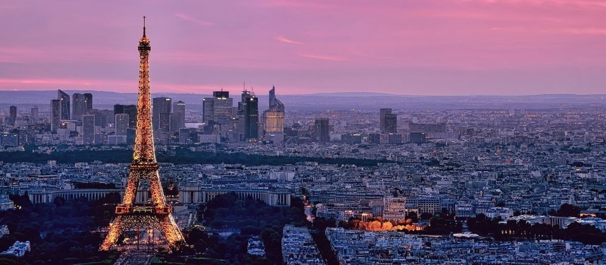
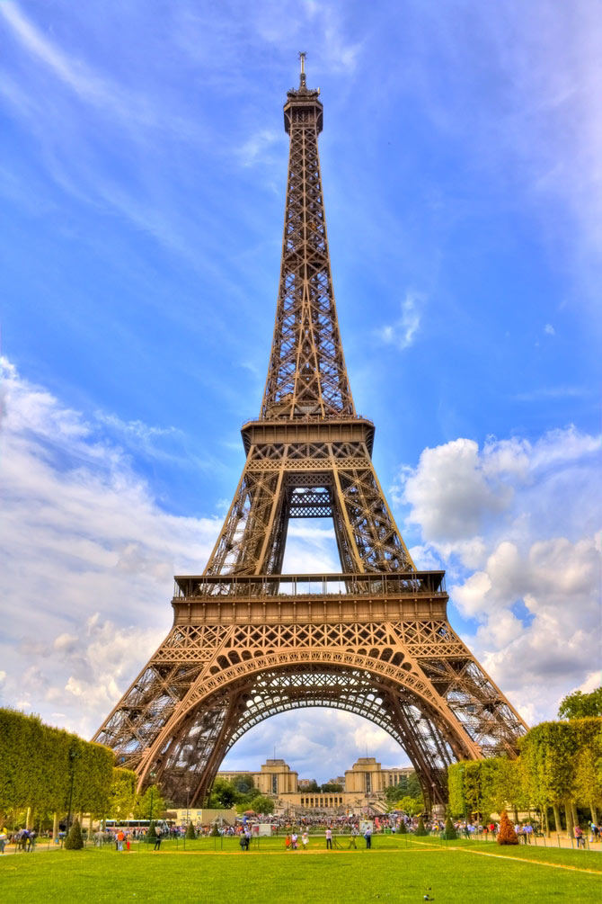
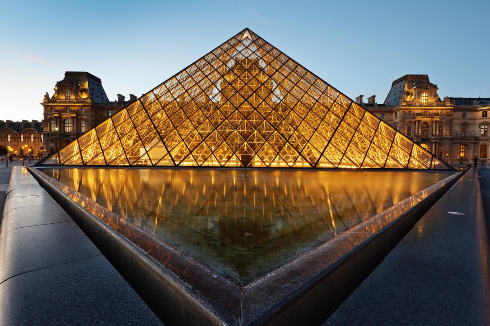
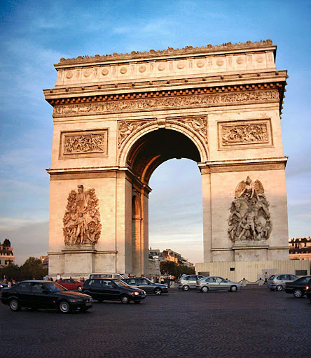
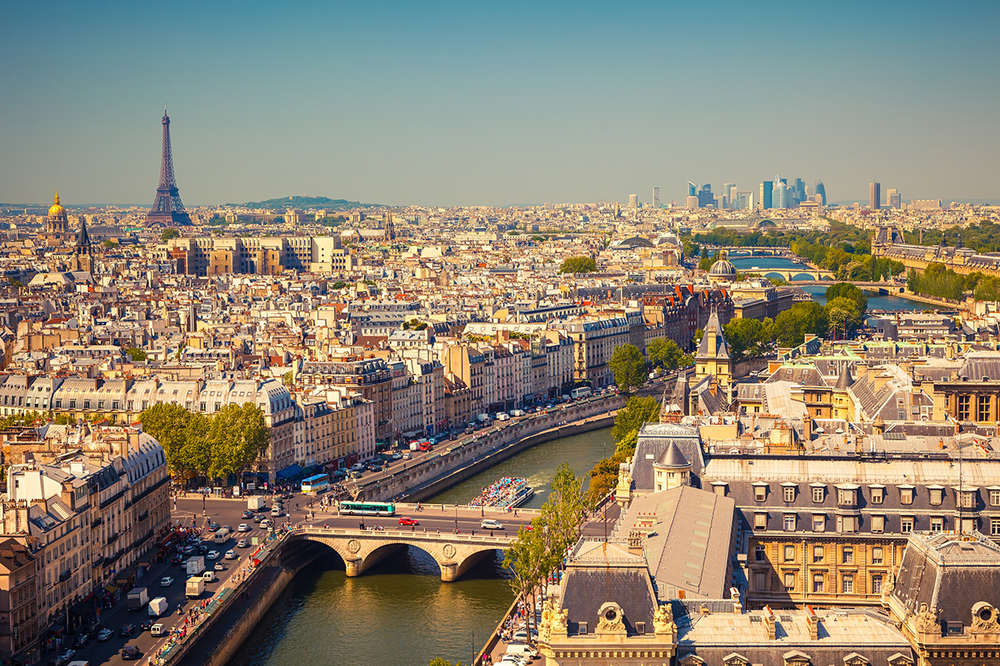

Пари́ж — город, столица Франции; административный центр региона Иль-де-Франс. Образует коммуну и департамент, разделённый на 20 округов.
Население — 2,274 млн человек (2014 год), пятый по величине город Евросоюза. В пределах агломерации «Большой Париж» проживает 10,6 млн человек (2011 год). Расположен на севере Франции, на равнине Парижского бассейна, на берегах реки Сены.
Главный политический, экономический и культурный центр Франции. Относится к глобальным городам, мировым финансовым центрам. Штаб-квартира ЮНЕСКО и других международных организаций.
Исторический центр, образованный островом Сите и обоими берегами Сены, складывался на протяжении веков. Во второй половине XIX века претерпел коренную реконструкцию. В пригороде расположен дворцово-парковый ансамбль Версаль.
Основан в III веке до н. э. кельтским племенем паризиев. С III—IV веков известен как галло-римский город Паризии. С конца X века с перерывами — столица Франции.
| Страна | Франция |
| Регион | Иль-де-Франс |
| Департамент | Париж |
| Координаты | 48°50′00″ с. ш. 2°20′00″ в. д.HGЯO |
| Внутреннее деление | 20 округов |
| Мэр | Анн Идальго |
| Основан | III век до н. э. |
| Прежние названия | Лютеция, Паризиум |
| Площадь | 105,4 км² |
| Средняя высота НУМ | 33 м |
| Население | 2 196 936 человек (2015) |
| Плотность | 21 283 чел./км² |
| Агломерация | 10 620 000 человек (2011) |
| Названия жителей | Парижане, парижанин, парижанка |
| Часовой пояс | UTC+1, летом UTC+2 |
| Телефонный код | +33 1 |
| Почтовые индексы | 75001—75020 и 75116 |
| Код INSEE | 75056 и 75101—75116 |
| Официальный сайт | paris.fr |
Первый раз в Париже: основные советы туристу
Как и в любом другом большом городе, в Париже разобраться сразу достаточно не просто. Многие ругают город за запутанную систему метро, некоторые находят тут опасные районы, кто-то просто не знает куда идти. В этой статье мы постараемся рассказать вам, как сделать пребывание в Париже удобным, даже если вы сюда едете в первый раз.
Первый раз в Париже: какие достопримечательности нужно обязательно посмотреть
Список достопримечательностей Парижа огромен. И всё зависит от того, сколько вы здесь проведете дней. Но есть самые-самые основные, без которых вы как будто и не бывали в Париже. Конечно, это Эйфелева башня.Если же вы хотите обязательно подняться на нее, то стоит купить билеты заранее или стоять в 2-3-х часовой очереди.
Обязательно нужно увидеть Лувр. Посещение музея может растянуться от 2-х часов до бесконечности. Поэтому сами регулируйте свое время.Помните, что очередь сюда как на Эйфелеву башню, а то и больше.
Нотр-Дам-де-Пари или Собор Парижской Богоматери. Ну куда же без него. Благо тут и вход бесплатный, и даже если очередь длинная, то она быстро движется. Тут вы простоите максимум минут 15-20. Через речку, напротив Нотр-Дама расположился Латинский квартал. Если вам позволяет время, загляните в него. Елисейские поля. Без них тоже не обходится ни одна поездка в Париж. Мало того, что, как считается, это одна из самых красивых и богатых улиц мира, так это еще и место тотального шоппинга. Так получилось ,что все предыдущие 4 достопримечательности находятся практически на одной линии. И при желании вы можете обойти их пешком за 1 день.Наслаждайтесь прогулками по Парижу.
Кроме вышеописанного следуем посетить Монмартр. Одним из самых красивых и неоднозначных районов города. Здесь жили художники и поэты, а сегодня по Монмартру просто приятно прогуляться. На Монмартре же распологается знаменитое кабаре Мулен Руж. Если не посетить, то увидеть красную мельницу стоит. Если же вы решили войти внутрь и посмотреть на французский кан-кан, то будьте готовы заплатить от 100 евро за 1 билет. И лучше их бронировать заранее, в день вашего приезда все места могут быть просто заняты.
Если вы путешествуете с детьми, то поездка, скорее всего, включает в себя и Диснейленд. Учтите, парк развлечений находится за городом. Ехать до него около 40 минут на общественном транспорте. И меньше, чем целый день в Диснейленде вы не проведете.
Таковы основные достопримечательности, которые стоит посмотреть в первую очередь. Конечно, есть еще миллион вещей, которые хочется вам посоветовать. Но остановимся пока на этом.
Если у вас остается время и желание то так же в первую десятку входят Версаль (дворец расположен в 40 км от города), Центр современного искусства Жоржа Помпиду (не обязательно посещать выставку, можно увидеть его снаружи), музей Орсе, квартал Маре, галереи Прентам и Лафайет, ля Дефанс (современный район Парижа), Булонский лес, башня Монпарнас и др.
Первый раз в Париже: каким транспортом пользоваться
Лучше всего метро и RER. Очень подробные инструкции мы дали в своих нескольких статьях. Не смотря на то, что парижское метро выглядит запутанным, это самый удобный вид городского транспорта. Если вам позволяет бюджет, то вы можете выбрать такси.Так же мы рекомендуем вам прокатиться разок на речном трамвайчике по Сене, чтобы увидеть город с воды. И можете взять велосипед на прокат. Но помните, что не все российские карточки подходят для этого вида транспорта во Франции.
Первый раз в Париже: где остановиться?
Почему-то, самый любимый район среди русских туристов в Париже – это девятый округ. Здесь действительно хорошо, безопасно и есть куда пойти, так что смело можете выбирать его. Если вы хотите отдохнуть в Париже с шиком, то следует рассмотреть первый округ (район Лувра), седьмой округ (район Эйфелевой башни, тут есть и отели с видом на нее) и восьмой округ (Елисейские поля). Тут расположились самые лучшие отели города. До любой точки Парижа близко, а жить безопасно. Мы же советуем вам рассмотреть 4 и 5 округа Парижа. Это исторический центр города. Возле Нотр-Дама цены, безусловно, заоблачные, но по окраинам этих округов вы можете найти неплохой отель за разумные деньги. Смотрите отели третьего, четвёртого и пятого округов. Кроме того рекомендуем вам 18 округ Парижа в качестве бюджетного варианта. Здесь находится Монмартр и по ночам шумно, но зато жить тут сравнительно дешево. Кстати, можно и в 18 округе найти отель с видом на Эйфелеву башню и тихим уютным двориком.
Первый раз в Париже: где и что поесть?
Попробовать обязательно нужно луковый суп и улиток, если получится, то и лягушек. Это что касается французской кухни.Можете выбрать любой, на ваш вкус и бюджет.
Фото:
   